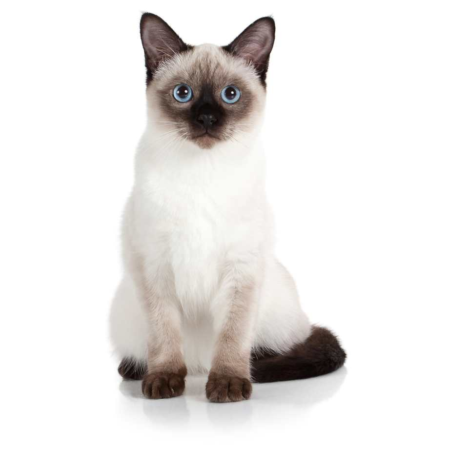

Historia de una Dorada.
Parrafo 1Parrafo 2
Parrafo 3
Parrafo 1
Hace muchos, muchísimos años, cuando existían animales que sabían hablar, ocurrió que nació un gato cerca de la granja de Pepe. En aquella granja había muchos animales que Pepe, el granjero, cuidaba con la ayuda de su mujer, Teresa Hace muchos, muchísimos años, cuando existían animales que sabían hablar, ocurrió que nació un gato cerca de la granja de Pepe. En aquella granja había muchos animales que Pepe, el granjero, cuidaba con la ayuda de su mujer, Teresa Hace muchos, muchísimos años, cuando existían animales que sabían hablar, ocurrió que nació un gato cerca de la granja de Pepe. En aquella granja había muchos animales que Pepe, el granjero, cuidaba con la ayuda de su mujer, Teresa.Hace muchos, muchísimos años, cuando existían animales que sabían hablar, ocurrió que nació un gato cerca de la granja de Pepe. En aquella granja había muchos animales que Pepe, el granjero, cuidaba con la ayuda de su mujer, Teresa Hace muchos, muchísimos años, cuando existían animales que sabían hablar, ocurrió que nació un gato cerca de la granja de Pepe. En aquella granja había muchos animales que Pepe, el granjero, cuidaba con la ayuda de su mujer, TeresaHace muchos, muchísimos años, cuando existían animales que sabían hablar, ocurrió que nació un gato cerca de la granja de Pepe. En aquella granja había muchos animales que Pepe, el granjero, cuidaba con la ayuda de su mujer, TeresaHace muchos, muchísimos años, cuando existían animales que sabían hablar, ocurrió que nació un gato cerca de la granja de Pepe. En aquella granja había muchos animales que Pepe, el granjero, cuidaba con la ayuda de su mujer, TeresaHace muchos, muchísimos años, cuando existían animales que sabían hablar, ocurrió que nació un gato cerca de la granja de Pepe. En aquella granja había muchos animales que Pepe, el granjero, cuidaba con la ayuda de su mujer, Teresa
Parrafo 2
El pobre gatito tuvo la mala suerte de quedar tapado por una hoja que había caído de un árbol y, cuando su madre recogió a sus hermanos para llevarlos a un lugar más tranquilo y seguro, a él no lo vio; como los gatos nacen ciegos, él tampoco pudo ver a su madre y hermanos. Así, el gatito quedó solo en el mundo y pasó mucha hambre hasta que Pepe lo encontró al lado del camino que conducía a su casa, y se lo llevó con él para cuidarlo.Hace muchos, muchísimos años, cuando existían animales que sabían hablar, ocurrió que nació un gato cerca de la granja de Pepe. En aquella granja había muchos animales que Pepe, el granjero, cuidaba con la ayuda de su mujer, Teresa Hace muchos, muchísimos años, cuando existían animales que sabían hablar, ocurrió que nació un gato cerca de la granja de Pepe. En aquella granja había muchos animales que Pepe, el granjero, cuidaba con la ayuda de su mujer, Teresa
Parrafo 3
Cuando el gato por fin pudo empezar a andar por la casa, lo primero que escuchó fue a Teresa que llamaba: "¡Pepe, Pepe! ¡Ven aquí un momento!". Y el pobre gato fue corriendo porque pensó que Pepe era él. Y siempre que alguien llamaba a Pepe, allá iba él corriendo, pensando que lo llamaban.Hace muchos, muchísimos años, cuando existían animales que sabían hablar, ocurrió que nació un gato cerca de la granja de Pepe. En aquella granja había muchos animales que Pepe, el granjero, cuidaba con la ayuda de su mujer, Teresa Hace muchos, muchísimos años, cuando existían animales que sabían hablar, ocurrió que nació un gato cerca de la granja de Pepe. En aquella granja había muchos animales que Pepe, el granjero, cuidaba con la ayuda de su mujer, Teresa

Cosas que la drolada ama:
- El pollito desebrado.
- Los sobres de alimento humedo.
- Las carnitas.
- Tomar medicamentos de todo tipo.
-
Ir al veterinario. - A mi bibi.
Cosas que la drolada odia: